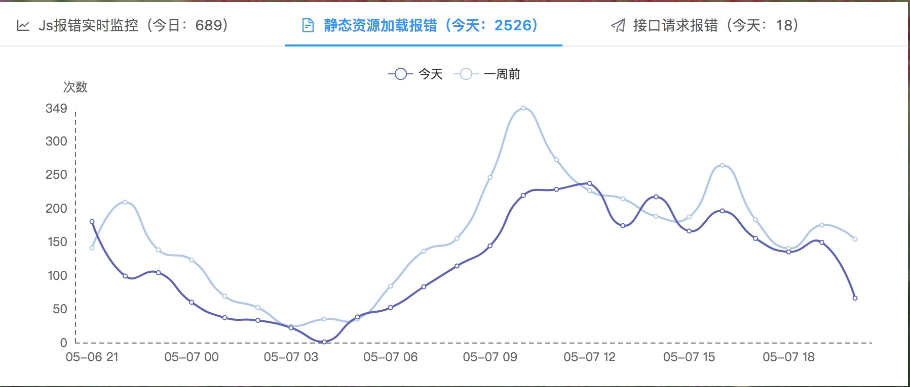
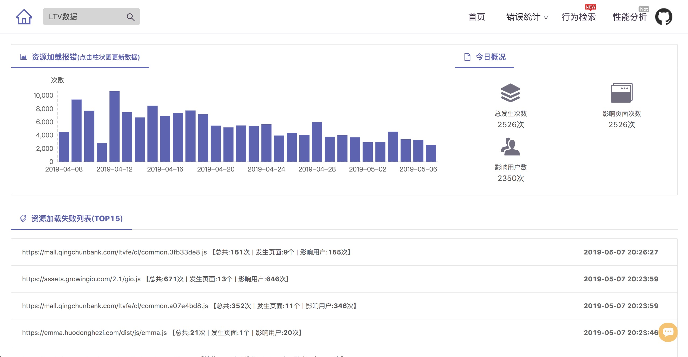

摘要： 资源加载失败会破坏产品功能以及用户体验....
Fundebug经授权转载，版权归原作者所有。
一步一步搭建前端监控系统系列博客：
怎样定位前端线上问题，一直以来，都是很头疼的问题，因为它发生于用户的一系列操作之后。错误的原因可能源于机型，网络环境，接口请求，复杂的操作行为等等，在我们想要去解决的时候很难复现出来，自然也就无法解决。 当然，这些问题并非不能克服，让我们来一起看看如何去监控并定位线上的问题吧。
市面上的前端监控系统有很多，功能齐全，种类繁多，不管你用或是不用，它都在那里，密密麻麻。往往我需要的功能都在别人家的监控系统里，手动无奈，罢了，怎么才能拥有一个私人定制的前端监控系统呢？做一个自带前端监控系统的前端工程狮是一种怎样的体验呢？
这是搭建前端监控系统的第三章，主要是介绍如何统计静态资源报错，跟着我一步步做，你也能搭建出一个属于自己的前端监控系统。
如果感觉有帮助，或者有兴趣，请关注 or Star Me 。
请移步线上： 前端监控系统
上一章介绍了如何做JS错误监控，还有一种错误是静态资源加载报错，很多时候资源加载报错对前端项目来说是致命的，因为静态资源加载出错了，有可能就会导致前端页面无法渲染，用户就只能对着一个空白屏幕发呆，不知所措。因为突然有一天，我们的线上环境爆出了大量的白屏错误，经过很长时间的排查，终于定位到问题原因：我们使用的CDN路径不知道怎么的，把我们的https协议全部指向了http协议，在安全协议下无法访问非安全协议的资源，导致了大量的白屏。所以我决定增加静态资源监控功能，以应对未来的未知情况。
那么，下边我们就进入正题：
正常情况下，html页面中主要包含的静态资源有：js文件、css文件、图片文件，这些文件加载失败将直接对页面造成影响甚至瘫痪，所有我们需要把他们统计出来。我不太确定是否需要把所有静态资源文件的加载信息都统计下来，既然加载成功了，页面正常了，应该就没有统计的必要了，所以我们只统计加载出错的情况。
先说一下监控方法：
1）使用script标签的回调方法，在网络上搜索过，看到有人说可以用onerror方法监控报错的情况， 但是经过试验后，发现并没有监控到报错情况，至少在静态资源跨域加载的时候是无法获取的。
2）利用 performance.getEntries()方法，获取到所有加载成功的资源列表，在onload事件中遍历出所有页面资源集合，利用排除法，到所有集合中过滤掉成功的资源列表，即为加载失败的资源。 此方法看似合理，也确实能够排查出加载失败的静态资源，但是检查的时机很难掌握，另外，如果遇到异步加载的js也就歇菜了。
3）添加一个Listener（error）来捕获前端的异常，也是我正在使用的方法，比较靠谱。但是这个方法会监控到很多的error, 所以我们要从中筛选出静态资源加载报错的error, 代码如下：
/**
* 监控页面静态资源加载报错
*/
function recordResourceError() {
// 当浏览器不支持 window.performance.getEntries 的时候，用下边这种方式
window.addEventListener('error',function(e){
var typeName = e.target.localName;
var sourceUrl = "";
if (typeName === "link") {
sourceUrl = e.target.href;
} else if (typeName === "script") {
sourceUrl = e.target.src;
}
var resourceLoadInfo = new ResourceLoadInfo(RESOURCE_LOAD, sourceUrl, typeName, "0");
resourceLoadInfo.handleLogInfo(RESOURCE_LOAD, resourceLoadInfo);
}, true);
}我们根据报错是的e.target的属性来判断它是link标签，还是script标签。由于目前我关注对前端造成崩溃的错误，所以目前只监控了css，js文件加载错误的情况。
首先，我们要做实时监控和预警，依然关联了7天以前同一时间端的数据，如果某个时间段出现错误量暴增，可以发出警告，及时制止。

然后，我们还需要知道更多详细的信息，如下图。 不看不知道，一看吓一跳。虽然线上环境并没有给我们报出这么多的问题，但是可以看到，每天还是有很多的静态资源加载报错，有些是很重要的静态资源文件，是必然会导致页面渲染失败的，所以必须要解决。

静态资源加载监控就完成了， 这里还有一些细节需要处理， 来帮助排查问题， 但是我一时半会儿也想不出来，暂时就说到这里吧。
Fundebug专注于JavaScript、微信小程序、微信小游戏、支付宝小程序、React Native、Node.js和Java线上应用实时BUG监控。 自从2016年双十一正式上线，Fundebug累计处理了20亿+错误事件，付费客户有阳光保险、核桃编程、荔枝FM、掌门1对1、微脉、青团社等众多品牌企业。欢迎大家免费试用！